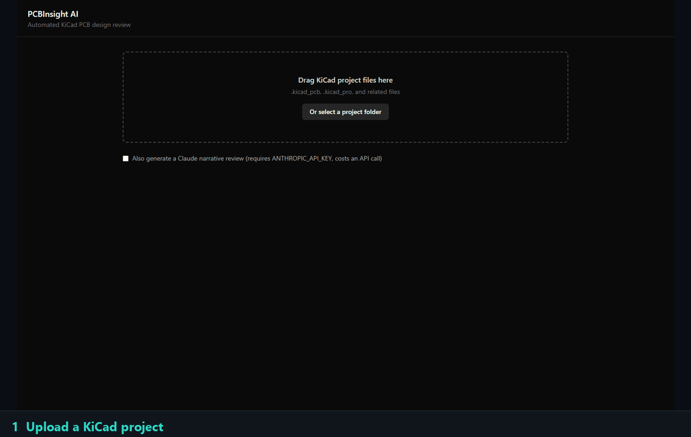
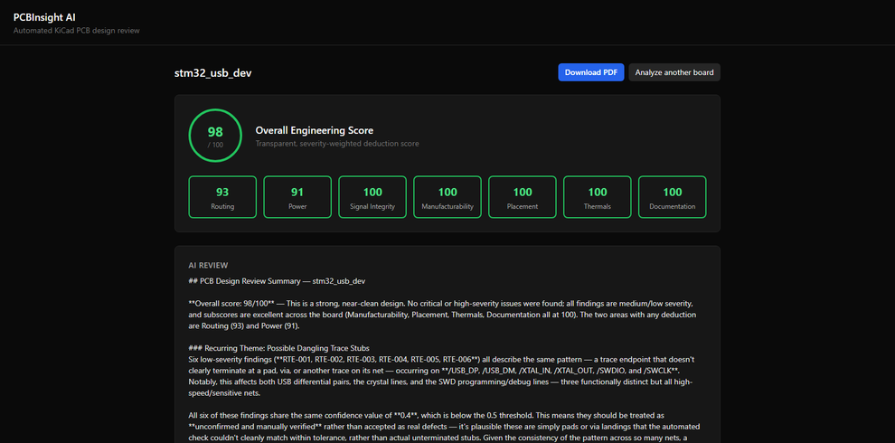
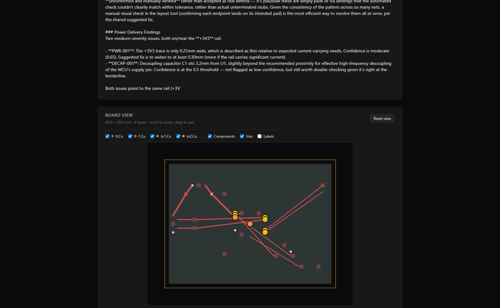
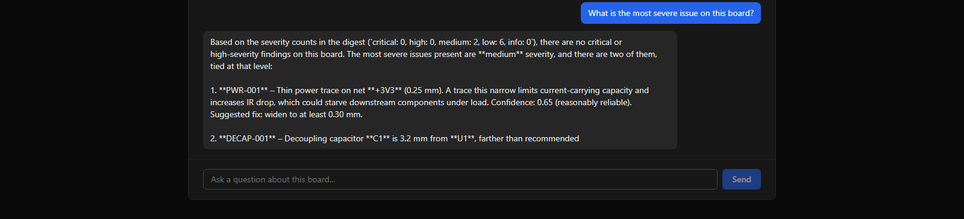
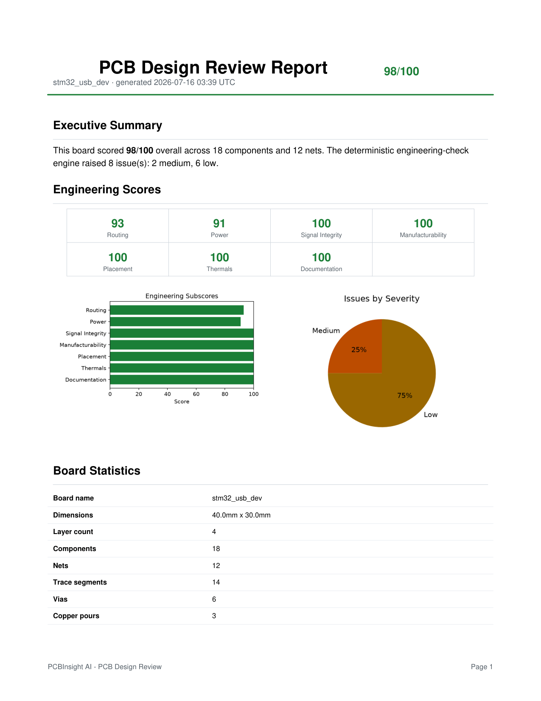
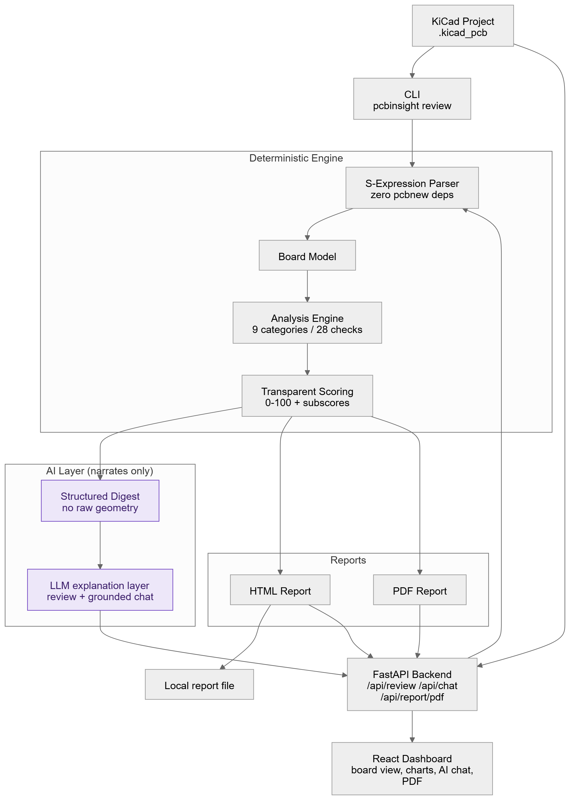

A design review for KiCad boards that shows its work.
PCBInsight reads a KiCad .kicad_pcb file, runs 28 engineering checks on it, and gives the board a 0 to 100 score with the reasoning behind every point. An optional AI layer can then explain the results in plain language, but it only ever works from what the checks found.
What you get
Findings
Each problem comes with a severity, a confidence value, the engineering principle behind it, and a suggested fix.
A score you can check
Six evaluated areas, each scored from the findings. The report lists every deduction, so the math can be followed by hand.
Reports
A local dashboard with a board view, a self-contained HTML report, and a PDF export.
The idea
Most "AI PCB review" tools hand a design to a language model and let it guess. I wanted the opposite: ordinary engineering checks find the problems, and the AI is only allowed to explain them.
Checks decide
Every finding comes from a named check with a documented threshold. There is no machine learning in the analysis, and the same board always gives the same result.
The score is plain arithmetic
Each finding takes points off its area (severity × confidence). Areas with no checks yet show N/A and are left out of the overall score instead of counting as perfect.
The AI explains, it doesn't analyze
The model never sees the raw board. It gets a structured summary of the findings and has to cite their IDs. A review that cites an ID the board doesn't have is not shown.
Confidence is visible
A finding below 0.5 confidence is worded as a possibility, not a fact. Low-confidence results are labelled in the report.
How it works
The core analysis runs on your own machine. The AI explanation is the only step that calls an outside API, and you can leave it off.
Load a KiCad project
The.kicad_pcbfile is read by my own S-expression parser. It doesn't need KiCad orpcbnewinstalled.Run the checks
28 checks across routing, power, ground, decoupling, placement, manufacturability, thermal, signal integrity and differential pairs. Each finding records where on the board it is.Score the board
A 0 to 100 overall score and a score for each area, with every deduction listed.Explain it (optional)
The AI writes a short review that cites finding IDs such asPWR-001. The citations are checked in code before the review is shown.Look at the board
A zoomable SVG of the copper layers with every finding pinned where it happens.Export
The same results as a self-contained HTML report or a PDF.
Screenshots
These are real captures from running PCBInsight on examples/stm32_usb_dev, a synthetic 4-layer STM32 USB board from the test corpus. None of them are mockups.





Checks and scoring
The checks are deterministic rules with fixed thresholds. They are documented in the code and in the reports, so you can see exactly why something was flagged.
| Category | What is checked |
|---|---|
| Routing | Long traces, via count, segment count, acute angles, dangling stubs |
| Power | Thin supply traces, missing power plane, long supply paths |
| Ground | Split (fragmented) ground, missing ground pour, ground islands, thin ground traces |
| Decoupling | Missing or distant decoupling capacitors on IC power nets |
| Placement | Connectors away from the board edge, crowded parts, unused space, parts not rotated in 90° steps |
| Manufacturability | Trace widths, annular rings, via density |
| Thermal | Heat sources without nearby copper pour, heat sources packed together |
| Signal integrity | Branch points, via count, net length |
| Differential pairs | Length matching, via symmetry, segment consistency |
The full list with thresholds is in the repository and in the demo's rule checker.
How the score is computed
Each finding takes points off one area: severity points × confidence. Each evaluated area starts at 100. The overall score is the average of the evaluated areas, rounded once at the end. An area with no checks feeding it (currently Documentation) shows N/A and is left out of the average. Every report includes the full list of deductions, so the numbers can be checked by hand.
In the demo you can tick findings as fixed and watch the score recompute with the same formula the engine uses.
The AI layer
The AI part is optional and limited on purpose. It explains the findings; it never decides what the findings are.
What it receives
A structured digest: the findings, their IDs, the score, and which areas were not evaluated. No raw board geometry.
What gets checked
Every cited finding ID is compared against the board's real IDs. A review is also rejected if it is empty or was cut off.
What happens on a failure
The model gets one retry with the problem named and the allowed IDs listed. If the retry also fails, the review is withheld and only the deterministic findings are shown.
What it doesn't prove
A correct ID doesn't prove the sentence around it is correct, so the findings stay the source of truth. Chat answers are logged but not yet checked the same way.
Architecture
Parser → checks → score, and then two branches: the reports, and the optional AI review. The AI branches off after scoring and only sees the digest, never the parser output or the board model.

backend/ | FastAPI service and CLI: parser, checks, scoring, AI integration, HTML and PDF reports |
frontend/ | React and TypeScript dashboard: upload, board view, findings, chat |
examples/ | Ten test boards, each built to exercise one thing (a clean board, a flawed one, power, thermal, RF, parser edge cases and more) |
More detail: architecture notes and why it's built this way.
By the numbers
Counted from the current code, not estimated.
Running it
Both the command line and the local dashboard work today. Python for the backend, Node for the dashboard.
Command line
cd backend pip install -r requirements.txt # one board python -m app.cli review ../examples/simple_board # every board in a folder python -m app.cli review path/to/boards/ --out reports/ # add the optional AI review (needs ANTHROPIC_API_KEY) python -m app.cli review ../examples/simple_board --ai
Dashboard
# terminal 1 cd backend uvicorn app.main:app --port 8000 # terminal 2 cd frontend npm install npm run dev
Full instructions are in the README.
About me
I'm Cyril Kafle, an electrical engineering student at Northern Virginia Community College. I'm most interested in where hardware and software meet: PCB design, embedded systems and chip design.
PCBInsight is my main project, and I'm still adding to it. Changes are tracked in the changelog.